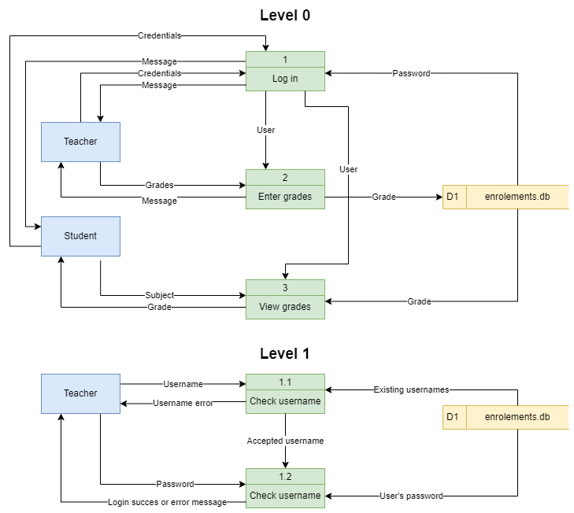

Data Flow Diagram#
A data flow diagram (DFD) maps out the flow of information for any process or system. It uses defined symbols like rectangles, circles and arrows, plus short text labels, to show data inputs, outputs, storage points and the routes between each destination. [Lucidchart, 2017]
Database Design Scenario
The first step in designing a database is developing an understanding of the scenario. For learning about designing databases we will use the following example:
Student Subject Database
Students can log into to access:
their current enrolment
subject grades when entered
Teachers can log into to:
Enter student grades
Each subject is only offered once, with one teacher
Each student can enrol in each subject only once.
A Data Flow Diagram is made up from four components:
external entities
process
data stores
data flows
We will use the following symbols to represent the components of DFD

Creating a DFD#
Step 1: Identify the External Entities#
External entities are:
an outside system that sends or receives data, communicating with the system being diagrammed
the sources and destinations of information entering or leaving the system
may be an outside organization or person, a computer system or a business system
should be labelled using a noun.
To design your DFD, consider the scenario you are addressing. What are the external sources and the destinations of data? That is, from outside of the application you are developing, who or what provides data or receives data?
Data can be provided in various ways:
user typing into an interface
user clicking on a button
another system providing a file
sensor readings
Data can be received in various ways:
displayed on a screen
printed to paper
sent a file
lights and metre readings
When considering the Student Subject Database all data is sourced from and destined for two external entities:

Step 2: Identify Processes#
Processes are:
any process that changes the data, producing an output
may perform computations, or sort data based on logic, or direct the data flow based on business rules
a short label is used to describe the process, such as “Submit payment”, and should be a verb or verb phrase
Once again consider the scenario you are designing a database for. What things within the systems do some kind of work on the data passing through it. Referring back to your Use Case Diagram, can help in identifying these.
In our Student Subject Database there are three processes can occur:

Step 3: Identify Data Stores#
Data stores are
files or repositories that hold information for later use, such as a database table or a membership form
each data store receives a simple label, such as “Orders”, along with a designation (D: digital, M: manual, T: temporary)
To identify your data stores, look for groupings of associated information. In our course we will generally have one datastore, unless the prescribed requirements indicate otherwise.
We only have one data store (a digital one) in our Student Subject Database example

Step 4: Identify Data Flows#
Data flows represent:
the route that data takes between the external entities, processes and data stores
portrays the interface between the other components and is shown with arrows
typically labelled with a short data name, like “Billing details”, which is a noun.
Important rules when adding data flows:
each process should have at least one data flow in and at least one data flow out
every data flow must connect to at least one process
each entity should have at least one data flow to or from a process
Here is the Student Subject Database example with all data flows added

Step 5: Decompose to next level#
To keep DFDs to a manageable size, each process can be decomposed into more detail.
The top level DFD is called Level 0 and should only involve around seven processes. If you have more than seven, then you need to combine processes that logically fit together.
Once the Level 0 DFD is created identify any processes that require more detail. Each of these processes are then decomposed into another DFD. The first deposition is called Level 1 and subsequent decompositions, Level 2, Level 3 etc.
The processes in the subsequent decompositions inherent their numbering from their parent process.
We will decompose the Log in process in the Student Subject Database example.

Step 6: Checking#
Now that the diagram is complete, check it against the DFD rules. You should be answering yes to all the following questions:
Does each process have at least one data flow in and one data flow out?
Does every data flow connect to at least one process?
Does every entity connect to at least one process via a dataflow?
Do all data flows only flow in one direction?
Do all data flow labels describe information (nouns)?
Are all processes numbered by their level?
Do all process labels describe actions (verbs)?
Do all data sources and data store labels describe things (nouns)?
Record in project#
All levels of your final DFD will be included in your project documentation.